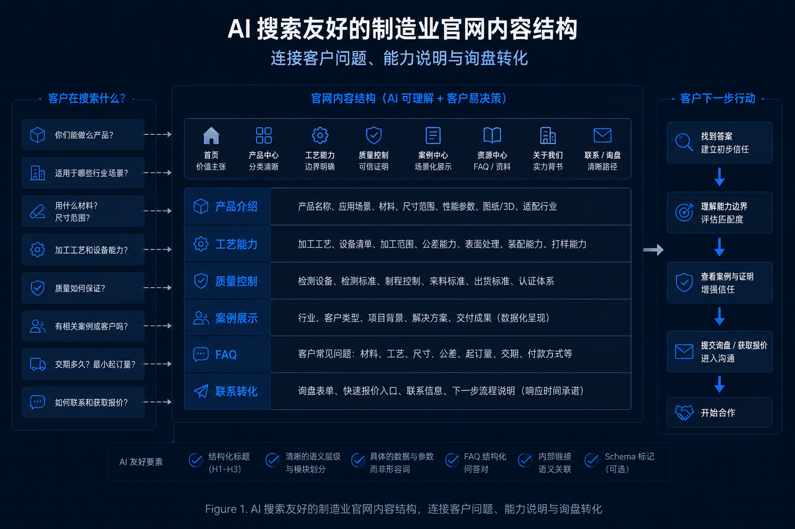

大部分中小制造企业在构建外贸官网时，仍习惯性地将重心放在“自我宣发”上。他们堆砌大量的溢美之词——诸如 high quality、competitive price、professional manufacturer，并认为这足以吸引海外客户。
然而，随着 ChatGPT、Perplexity 以及各类 AI 搜索引擎的崛起，海外 B2B 采购商的检索习惯正在发生质的改变。如果你的官网内容缺乏实质性的数据、具体的工艺场景和结构化的问答，AI 系统根本无法理解你的“护城河”在哪里，更不会在买家发起长尾搜索时将你作为精准答案推荐出来。
1. 为什么“high quality”这类词无法被 AI 正确理解？
在传统的官网架构中，企业往往习惯于使用大量形容词。这在过去或许能勉强填补页面的空白，但在今天，无论是专业的工程买家，还是进行数据抓取的 AI 爬虫，它们都需要看到具体的事实与证据。
- 传统官网喜欢堆形容词：空泛地宣称“质量极佳”不仅让人产生审美疲劳，在自然语言处理模型看来，更是没有任何信息熵的噪音。
- AI 和采购商都需要具体事实：与其强调“质量好”，不如清楚地说明你们的检测方式、能达到的公差范围、遵循的材料标准，以及过往在严苛条件下的交付经验。
- 抽象带来的过滤风险：内容越抽象，搜索系统越难将其与客户复杂的真实需求相匹配；买家在对比了 5 家供应商后，也会因为无法判断你的能力边界而直接关闭网页。
"In the era of AI search, vague adjectives are dead weight. A search engine cannot recommend you as a 'high-precision CNC machining expert' if your site only says 'we do good machining'."
2. 制造业官网内容应该围绕哪些信息重新组织？
要在 AI 推荐和买家筛选中脱颖而出，企业官网的内容模块必须从“自我介绍”向“回答客户疑问”转变，具体应重组以下核心维度：
- 产品展示不仅是放图：必须解释该产品的应用场景、选用的材料特性、尺寸规格范围以及适配的行业。
- 工艺能力需要划定边界：要说明具体的加工能力、使用的核心设备型号、相应的检测流程、对打样的政策以及对定制化需求的响应机制。
- FAQ 的战略意义：FAQ 不仅仅是减少客服工作量，它是目前 AI 搜索引擎和客户在做出初步筛选决策时，最高效的内容结构。
- 案例展示的颗粒度：在隐去客户敏感信息的前提下，展示客户的初始痛点、你们的解决方式以及最终的交付结果。
- 清晰的询盘路径：让客户明确知道看完介绍后，下一步应该如何与技术或销售团队取得联系。
| 内容模块 | 传统写法 (展示思维) | AI 友好写法 (转化思维) |
|---|---|---|
| 产品介绍 | 只放白底图和简要参数 | 增加应用场景、适配行业、材料与尺寸边界 |
| 工艺能力 | “我们拥有先进的生产设备” | 列出具体加工公差、主力设备型号、支持的定制范围 |
| 质量控制 | 上传一张 ISO 证书图片 | 详细说明检测流程、使用仪器、出货合格率与追溯体系 |
| 案例展示 | 客户合影照或一片空白 | 隐去敏感信息，结构化展示“客户痛点-解决过程-最终结果” |
| FAQ | 只有公司地址和退换货政策 | 针对采购商关心的起订量、打样周期、验厂标准进行详细解答 |
| 联系转化 | 页面底部一个孤立的留言板 | 在核心段落穿插明确行动号召（获取样品、预约视频验厂、下载规格书） |
AI 友好的内容结构示例
在重构官网时，可以通过直观的视觉与严谨的文字逻辑相互配合，将复杂的工程能力转化为结构化的数字资产。这不仅让页面逻辑更为清晰，也能大幅提升搜索引擎爬虫的抓取效率。

3. AI 搜索时代，官网内容本质上是企业能力的结构化表达
随着互联网技术的演进，未来不仅仅是“人”在读你的官网，各种 AI 模型、推荐引擎和采购辅助系统也在高频地读取和解析你的网页。
只有当你的内容结构足够清晰、颗粒度足够细化时，企业才有机会被 AI 准确总结、精准引用，并最终推荐给对口的高净值买家。这种重构并非为了迎合某种虚无缥缈的算法，其核心目的是极大地降低客户的理解成本。
对于中小制造企业而言，并不需要在数字化建设的初期就把网站做得极其庞大复杂，但至少要做到把核心能力讲清楚、说明白。最终我们要认识到：制造业的外贸官网，绝对不是写给自己看的公司简介，而是写给客户、搜索引擎和 AI 系统共同理解的能力说明书。